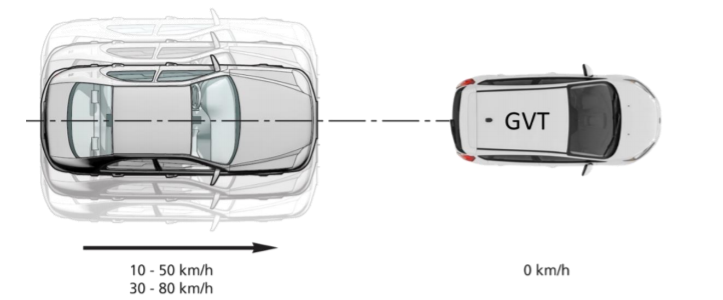
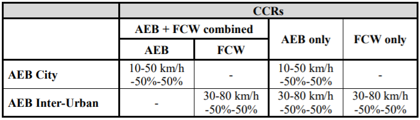
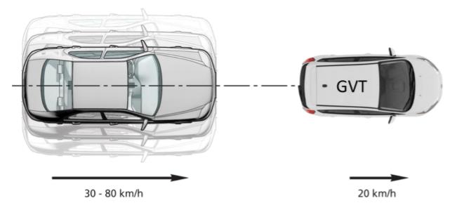
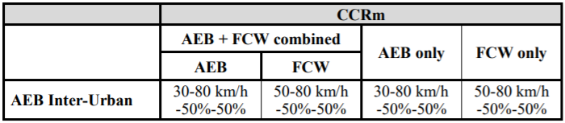
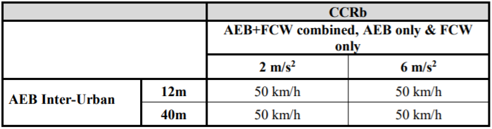

安装
2019.11.25：
直接安装。。该软件主要用于驾驶辅助、驾驶预警、避撞和减撞等功能的前期开发和测试。具体操作包括建立场景、建模传感、建模控制算法、实验仿真。
操作流程
以一个AEB算法设计与仿真为例，完成场景建立、算法设计、实验仿真等过程。
任务描述：完成E-NCAP规定的测试场景，要求基于TTC和至少一种安全距离(AS)模型分别设计AEB算法，实现安全且舒适的前向避撞。请说明设计依据，并比较其在不同测试工况下的介入/退出效果。
建立场景
自动紧急制动（AEB）的作用是车辆在检测到可能发生的碰撞时自动实施的制动，以降低车辆速度并可能避免碰撞。根据任务要求，需要在E-NCAP规定的测试场景下完成AEB测试。相应的标准文件为AEB C2C Test Protocol v2.0.1 from January 2018，对应场景简要介绍，未来使用的标准文件为AEB Car-to-Car Test Protocol v3.0.2
from January 2020，本次仿真基于前者。中文分析文章有知荐 | AEB E-NCAP测试项目及发展趋势。
测试在干燥(表面无明显水分)、均匀、铺实、坡度在1%至1%之间的地面进行试验，测试表面的最小峰值制动系数(PBC)应为0.9。环境温度在5℃以上和40℃以下，无降水，地面水平能见度大于1km。风速应低于10m/s，以尽量减少GVT和VUT的干扰。评估场景分为CCRs（前车静止）、CCRm（前车运动）和CCRb（前车制动）三种，具体如下图所示。



其中CCRs和CCRm场景的速度以5km/h为步长变化，横向重叠率以25%为步长变化。GVT需要在1s内达到期望减速度。
目标车型采用全球车辆目标（GVT）。此外标准文件好像没别的东西了？所以...开始动手吧？
- 双击点开PreScan Process Manager 8.5.0图标，在双击任务栏下的图标打开对应窗口，选择GUI Start打开GUI界面。
- File-新建实验。
- 拖入草地Grass；拖入直线道路Straight Road，设定长度200m；选择Inherited Path Definition，在道路上绘制路径（似乎直接画不与道路相连会更加好调节路径参数）。
- 拖入车辆放在路径上，就选被控制车Audi A8 Sedan、不控制车BMW X5 SUV吧。
- 右键点击小车，选择Object Configuration，设定其Path、Speed Profile，生成Trajectory。
- 设定小车的Dynamics（建议2D），产生油门/刹车等控制接口。
- 设定小车的Driver Model（Path Follower），产生默认控制器（对于不进行控制的障碍车，建议不设置Dynamics和Driver Model）。
- 点击上方菜单Parse – Build - 生成Viewer - 生成Simulink。出现两个警告，emm应该没啥大问题。（如果打开matlab后报错，检查是否安装了编译器，推荐直接安装vs2013。）
- 添加传感器，目前主要使用的有Radar、Camera、Lidar，考虑到成本的因素，这里使用Radar。
- 打开碰撞检测General Setting - Collistion Detection - Enable collision detection；在车辆设置中将Collsion Detection下面的选项进行勾选。
算法设计
与Simulink连接部分参考PreScan第四课：PreScan模型接入控制算法的接口
- Simulink接入Stop，选择Block Parameters：Bus Selector模块。
- Radar共有13个数据输出，依次为：
- ActiveBeamID
- Range[m]
- Dopp1erVelocity[ms-1]
- Dopp1ervelocityX[ms-1]
- Dopp1erVelocityY[ms-1]
- DopplerVelocityZ[ms-1]
- Theta[deg]
- Phi[deg]
- TargetID
- TargetTypeID
- EnergyLoss[dB]
- Alpha[deg]
- Beta[deg]
其中可以使用的参数为第2个Range[m]、第4（3）个Dopp1ervelocityX[ms-1]（Dopp1erVelocity[ms-1]），第3个和第4个似乎区别不大，因为在这个实验中第5和第6个参数几乎为0。
- 因而新建一个MATLAB Function，输入参数为Radar的第2和4个参数
暂时这么着吧，反正目前没时间仔细弄了。
© 2018-2019
Bing16. All rights reserved.